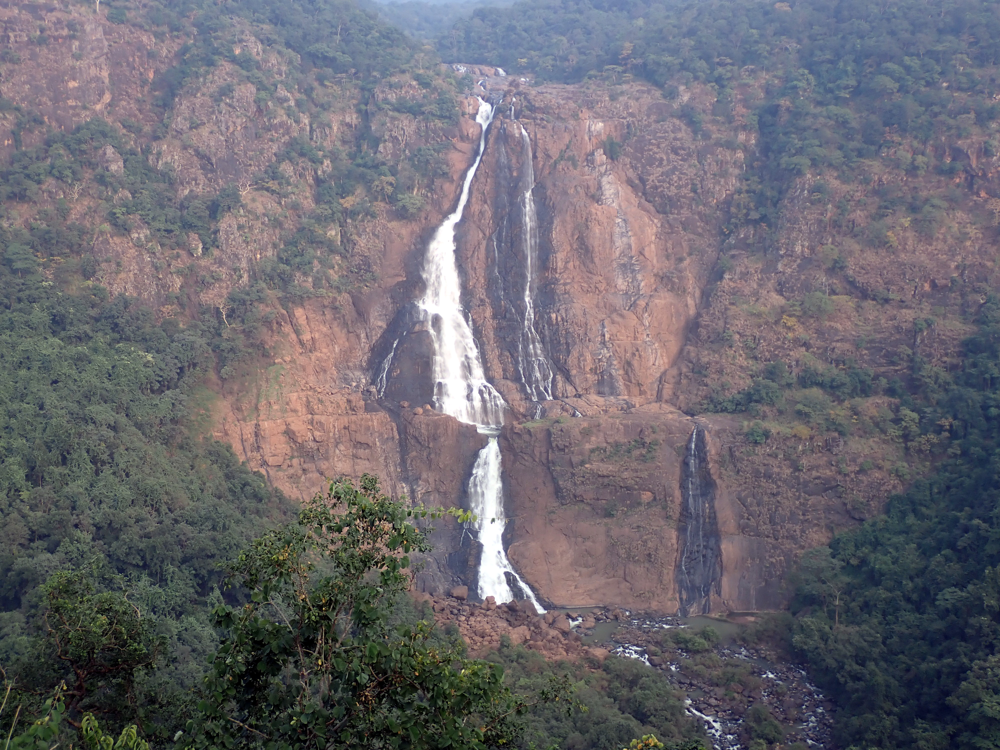
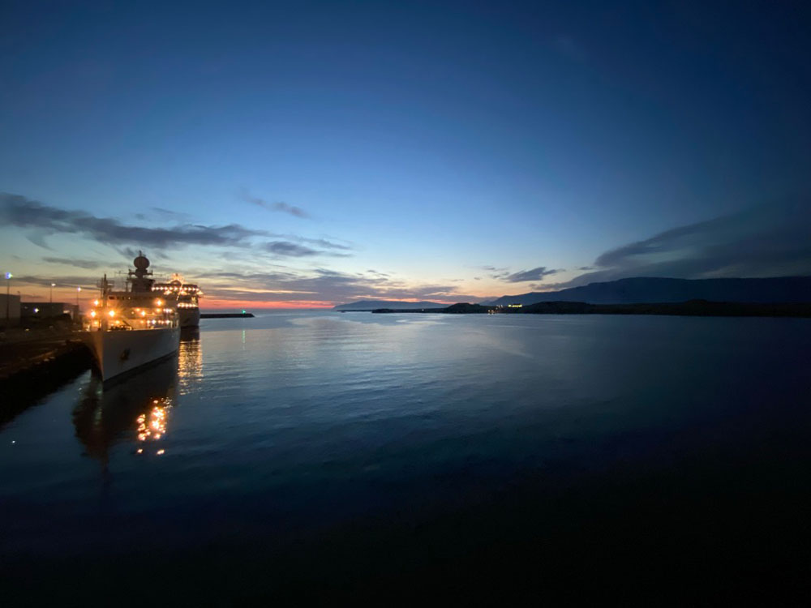
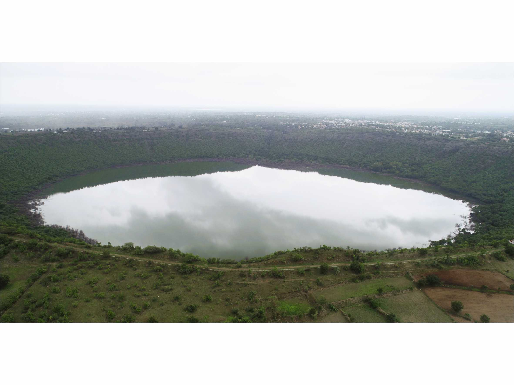
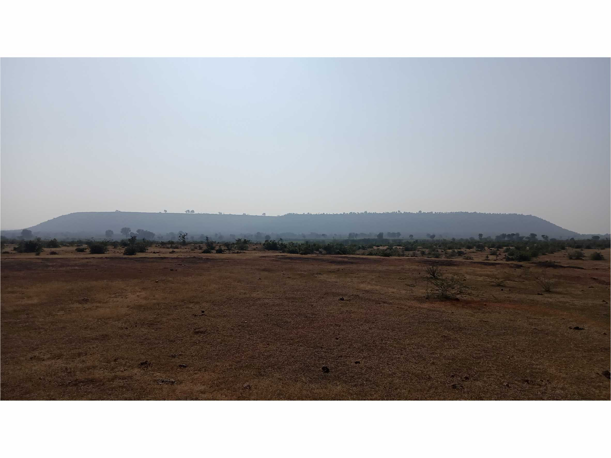

<html lang="en">
<head>
    <meta charset="UTF-8">
    <meta name="viewport" content="width=device-width, initial-scale=1.0">
    <link rel="icon" type="image/x-icon" href="../assets/favicon.png">
    <link href="https://cdn.jsdelivr.net/npm/bootstrap@5.0.2/dist/css/bootstrap.min.css" rel="stylesheet" integrity="sha384-EVSTQN3/azprG1Anm3QDgpJLIm9Nao0Yz1ztcQTwFspd3yD65VohhpuuCOmLASjC" crossorigin="anonymous">
    <link rel="stylesheet" type="text/css" href="../assets/colors.css">
    <link rel="stylesheet" href="https://cdnjs.cloudflare.com/ajax/libs/font-awesome/6.5.1/css/all.min.css" integrity="sha512-DTOQO9RWCH3ppGqcWaEA1BIZOC6xxalwEsw9c2QQeAIftl+Vegovlnee1c9QX4TctnWMn13TZye+giMm8e2LwA==" crossorigin="anonymous" referrerpolicy="no-referrer" />
    <!--<style>
        a:hover{
            color: #ffffff;
            background-color: #0000ff;
        }
        a:active{
            color: #0000ff;
        }
    </style>-->
</head>
<body>
    <script src="https://cdn.jsdelivr.net/npm/bootstrap@5.0.2/dist/js/bootstrap.bundle.min.js" integrity="sha384-MrcW6ZMFYlzcLA8Nl+NtUVF0sA7MsXsP1UyJoMp4YLEuNSfAP+JcXn/tWtIaxVXM" crossorigin="anonymous"></script>
    <script src="https://static.elfsight.com/platform/platform.js" data-use-service-core defer></script>
</body>
</html>

<!--navbar-->
<!--https://youtu.be/qNifU_aQRio-->
<!--Check for how to customize/create the navigation bar-->
<!--Watch the end of the video to add a Search button to the top of the page-->
<nav class="navbar mx-3 my-1 p-1 navbar-light sticky-top bg-light navbar-expand-sm rounded border" style="border-color:#00876c"> <!--sticky-top sticks the navbar to the very top of the page-->
    <a href="index.html" class="navbar-brand h1 d-sm-none">
        <i class="fa-solid fa-house-chimney primary-atn"></i>
    </a>
    <button type="button" data-bs-toggle="collapse" data-bs-target="#navbarNav" class="navbar-toggler" aria-controls="navbarNav" aria-expanded="false" aria-label="Toggle navigation">
        <i class="fa-solid fa-bars primary-atn"></i>
    </button>
    <div class="collapse navbar-collapse" id="navbarNav"> <!--navbarNav is a variable to be used in the data-target-->
        <ul class="navbar-nav mx-auto">
            <li class="nav-item px-3 d-sm-block">
                <a href="../index.html" class="nav-link">
                    Home
                </a>
            </li>
            <li class="nav-item active px-3">
                <a href="team.html" class="nav-link">
                    People
                </a>
            </li>
            <li class="nav-item active px-3">
                <a href="publications.html" class="nav-link">
                    Publications
                </a>
            </li>
            <li class="nav-item active px-3">
                <a href="research.html" class="nav-link active" style="color: #00876c;">
                    Research
                </a>
            </li>
            <li class="nav-item active px-3">
                <a href="#" class="nav-link">
                    Facilities
                </a>
            </li>
        </ul>
    </div>
</nav>

<!--header-->
<div class="row primary-theme justify-content-center">
    <div class="container-lg pt-2 pb-1 mx-5">
        <div class="row justify-content-center align-items-center">
            <h2 class="text-center secheader-font primary-theme">
                RESEARCH
            </h2>
        </div>
    </div>
</div>

<!--Main Content-->
<div class="my-3 row justify-content-center">
    <div class="col-11 col-md-9 justify-content-center">
        <h4 class="mx-5 text-center secheader-font primary-theme">
            Ongoing Projects
        </h4>
    </div>
</div>
<div class="row my-3 justify-content-center">
    <div class="col-11 col-xl-10 border team-boxes bg-light">
        <div class="row">
            <div class="col justify-content-center">
                
                <strong class="normal-text-header" style="text-align: justify;">
                    Determining the origin of the Simlipal Volcanics: meteoritic impact vs effusive volcanism. 2024-2026, STC, ISRO, India. 
                </strong>
                <p style="text-align: justify; margin-top: 15px;" class="normal-text">
                    In India, three geological structures have been proved beyond doubt to be impact craters of extraterrestrial meteoritic origin. These are Dhala impact structure in Madhya Pradesh (<a href="https://onlinelibrary.wiley.com/doi/10.1111/j.1945-5100.2008.tb00704.x" target="_blank" style="text-decoration: none; color: #00876c;">Pati et al., 2008</a>), Ramgarh Crater in Rajasthan (<a href="https://onlinelibrary.wiley.com/doi/10.1111/maps.13454" target="_blank" style="text-decoration: none; color: #00876c;">Kenkmann et al., 2020</a>) and Lonar Crater (<a href="https://link.springer.com/article/10.1007/bf00897591?utm_source=getftr&utm_medium=getftr&utm_campaign=getftr_pilot" target="_blank" style="text-decoration: none; color: #00876c;">Fudali et al., 1980</a>). This project will focus on Simlipal Crater to identify its origin in the light of volcanic or meteoritic impact mechanisms. We have selected this crater because, unlike the Kaveri crater, it is not entirely reworked. Thus, some morphological elements of a typical impact structure are still preserved. <br>
                    This project uses microscopic and magnetic lines of evidence. We use the visible and near-infrared reflectance spectroscopy (VNIR, 350–2500 nm) and the Fourier-transform infrared spectroscopy of the Simlipal Volcanic and the clay minerals in the bole beds will aid in the ongoing efforts of ISRO to prepare a spectral catalogue. 
                </p>
            </div>
        </div>
    </div>
</div>
<div class="row my-3 justify-content-center">
    <div class="col-11 col-xl-10 border team-boxes bg-light">
        <div class="row">
            <div class="col justify-content-center">
                <a href="https://iodp.tamu.edu/scienceops/gallery/exp396/week1/" target="_blank"></a>
                <strong class="normal-text-header" style="text-align: justify;">
                    Flow sense and emplacement setting of the Mid-Norwegian continental margin basalts. 2023-2026, Funded by NCPOR, MoES, India. 
                </strong>
                <p style="text-align: justify; margin-top: 15px;" class="normal-text">
                    IODP-396 seeks to understand the nature, cause and climate implications of excess magmatism during the northeast Atlantic continental breakup. Competing geodynamic end-member hypotheses exist for the formation of this excess magmatism, but their relative importance remains unresolved: (1) elevated mantle potential temperatures associated with mantle plume processes, (2) enhanced material flux through the melt window during rifting caused by small-scale convection at the base of the lithosphere, and (3) mantle source heterogeneity that may contribute to anomalously high melt production during continental breakup. Voluminous magmatism also coincides with the global greenhouse climate in the early Paleogene and has been proposed as a driver of both short-term (Paleocene-Eocene Thermal Maximum) and long-term (early Eocene Climate Optimum) global warming. However, the timing of the magmatism is not sufficiently constrained. Improved constraints on melting conditions, timing of magmatism, magmatic fluxes in time and space, eruption environment, sedimentary proxy data, and relative timing of climate events are required to resolve these linked controversies. Expedition 396 targeted volcanic and sedimentary sequences at nine primary sites along and across the mid-Norwegian margin. 
                </p>
            </div>
        </div>
    </div>
</div>
<div class="row my-3 justify-content-center">
    <div class="col-11 col-xl-10 border team-boxes bg-light">
        <div class="row">
            <div class="col justify-content-center">
                
                <strong class="normal-text-header" style="text-align: justify;">
                    Impact excavation processes on terrestrial analogues for Mars: a case study at Lonar Crater, India. 2021-2024, AvH Foundation, Germany. 
                </strong>
                <p style="text-align: justify; margin-top: 15px;" class="normal-text">
                    Impact craters are the most common geological features on solid planetary surfaces. Crater formation and ejecta emplacement models of terrestrial impact craters are often compared with observations of lunar craters. Lonar crater that occurred in Deccan basalts is comparable to the massive basaltic plateaus on Mars. The impact structure is marked by a pronounced crater rim that has an average height of 30 m. The continuous ejecta blanket of Lonar crater extends to an average distance of 1 km from the crater rim. 
                    <br>Lonar crater allows us to investigate and understand the crater formation, structural uplift, ejecta emplacement and rampart formation process, that is also of great importance for Martian impact craters. The main objectives of the project are the analysis of the present-day ejecta blanket and the pre-impact surface, of the deformed target rocks exposed in the crater wall, and of the present-day basalt flows underlying the ejecta to reconstruct the ejecta excavation and emplacement process as well as the original crater morphology.   
                </p>
            </div>
        </div>
    </div>
</div>
<div class="row my-3 justify-content-center">
    <div class="col-11 col-xl-10 border team-boxes bg-light">
        <div class="row">
            <div class="col justify-content-center">
                
                <strong class="normal-text-header" style="text-align: justify;">
                    Origin and emplacement of impact melt at Dhala Impact structure, India. 2020-2024. IIT-K, India.  
                </strong>
                <p style="text-align: justify; margin-top: 15px;" class="normal-text">
                    At the Dhala impact structure, the monomict breccia (MB), the impact melt rock, and ballistically emplaced ejecta outcrop in proximity. Since these three impactite lithologies form by different mechanisms in different parts of the transient cavity, we investigate their emplacement settings. The intensities of the rock magnetic parameters in MB are comparable with the unshocked target granitoid at Dhala. The bimodal distribution of the pole of the magnetic foliation indicates a fold due to NE-SW oriented σ<sub>1</sub>, which matches the orientation of a pre-impact regional deformation event.
                    <br>Thus, the magnetic fabrics developed during a pre-impact tectonic deformation and were not altered due to impact. The absence of the reorientation of magnetic fabrics indicates that the peak shock pressures were below 0.5 GPa. Our results show that MB was not displaced from its pre-impact position. We infer that MB was located close to the floor/wall of the transient cavity. Space restriction, large overburden, and relatively lower energy of the shock wave at the floor/wall of the transient cavity prevented displacement during the excavation phase. Thus, MB underwent dilation and tensile fracturing without displacement. Our preliminary estimates are that the transient crater was c. 6.8 km long and 5.2 km wide rim, elongated in the NE-SW direction, the final crater was 8.8 to 11.5 km large, and the central uplift was 800 to 1150 m high with a diameter of ∼ 3 to 4 km. The projectile was 340 to 680 m large with NE-SW trajectory and ∼ 15° impact angle. 
                </p>
            </div>
        </div>
    </div>
</div>
<div class="my-3 row justify-content-center">
    <div class="col-11 col-md-9 justify-content-center">
        <h4 class="mx-5 text-center secheader-font primary-theme">
            Completed Projects
        </h4>
    </div>
</div>

<!--footer-->
<div class="row primary-theme justify-content-center">
    <p class="text-center my-1" style="font-family: 'Times New Roman', Times, serif;">
        &copy; 2024, <a href="https://swastiksumanbehera.github.io/" target="_blank" style="color: white;">Swastik Suman Behera</a>&nbsp;
        <a href="https://github.com/swastiksumanbehera" target="_blank"><i class="fa-brands fa-github primary-atn"></i></a>
    </p>
</div>